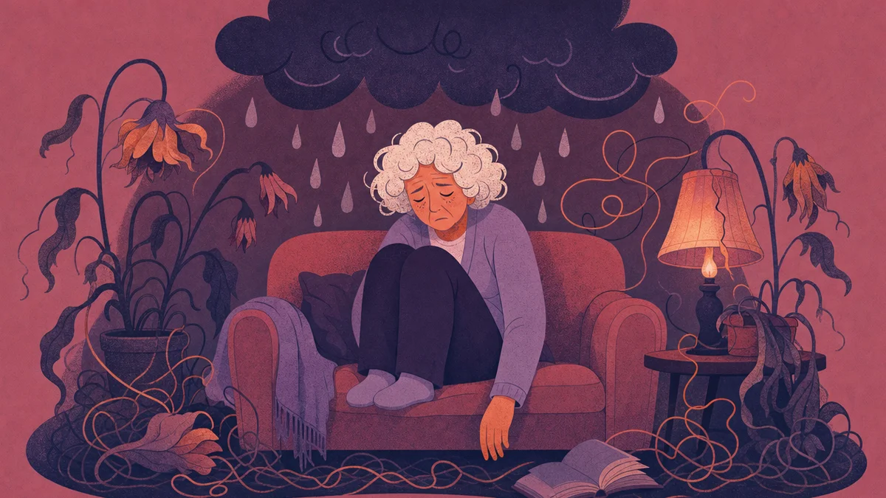

![Symptom Compass]()
Am I Depressed or Just Low? Understanding the Difference

Everyone feels low sometimes, but when the feeling sticks around it's natural to wonder whether it's something more. This guide explains the difference between low mood and depression, the signs worth paying attention to, when to get help, and how the main options compare, so you can decide what might suit you.
"Am I depressed?" is one of the most common questions people ask when they've been feeling flat, sad or unlike themselves for a while. It can be hard to tell whether you're going through a rough patch that will pass, or whether something more is going on.
Low mood and depression sit on a spectrum, and they share many of the same feelings. The differences are mostly about how long it lasts, how intense it is, and how much it affects your everyday life.
This article can't diagnose you. Only a qualified professional, such as a GP, can do that. But it can help you make sense of what you're feeling and see which directions might be worth exploring.
What Is Low Mood?
Low mood is a normal part of life. You might feel sad, tearful, tired, irritable or lacking in confidence, often in response to something difficult, such as stress at work, a disappointment, a relationship problem, money worries or loss.
Low mood usually lifts after a few days or weeks. Small changes, like getting more sleep, talking to someone, sorting out a problem that's bothering you or doing things you enjoy, often help. You can usually still function and find some pleasure in things, even if they feel harder than usual.
What Is Depression?
Depression is more than feeling unhappy or fed up for a few days. It's a common mental health condition in which low mood, or a loss of interest and pleasure in things, lasts for weeks or months and affects your daily life.
The NHS advises seeing a GP if you have symptoms of depression for most of the day, every day, for more than 2 weeks.
Doctors describe depression as less severe (mild) or more severe (moderate or severe), depending on how many symptoms you have, how bad they are and how long they've lasted. Depression can also take particular forms, such as postnatal depression after having a baby, or seasonal affective disorder (SAD), which follows the seasons.
Depression is not a sign of weakness, and it's not something you can simply "snap out of". It's also very treatable.
Low Mood vs Depression: Key Differences
There's no sharp line between the two, but these differences can help you think about where you are:
| Low mood | Depression | |
|---|---|---|
| How long it lasts | Usually a few days to a couple of weeks | Most of the day, nearly every day, for more than 2 weeks |
| Enjoyment | You can still enjoy some things | Little or no interest or pleasure in things you used to enjoy |
| Daily life | Harder, but you can mostly keep going | Work, relationships and everyday tasks feel very hard or impossible |
| Response to good things | Mood often lifts with good news, rest or support | Mood often stays low even when good things happen |
| Other symptoms | Few, and usually mild | Often several, such as sleep changes, exhaustion, poor concentration, hopelessness or guilt |
If you're somewhere in between, or not sure, that's very common. You don't need to be certain before seeking support.
Common Signs of Depression
Depression affects people in different ways. You're unlikely to have all of these, but you might notice some:
How you feel
- Persistent sadness, emptiness or hopelessness
- Feeling tearful, irritable or easily frustrated
- Losing interest or pleasure in things you used to enjoy
- Feeling guilty, worthless or a burden
- Feeling anxious or worried
How you think
- Finding it hard to concentrate or make decisions
- Being very self-critical
- Thinking things will never get better
- Thoughts of death or of harming yourself
Your body and behaviour
- Feeling tired or low in energy most of the time
- Sleeping much more or much less than usual
- Changes in appetite or weight
- Moving or speaking more slowly than usual
- Unexplained aches and pains
- Withdrawing from friends, family and activities
Some physical conditions, such as an underactive thyroid, can cause similar symptoms. That's one reason a GP may suggest blood tests.
What Can Cause Low Mood and Depression?
There's rarely a single cause. Often several things combine:
- Life events and stress, such as bereavement, relationship breakdown, job loss, money problems or caring responsibilities.
- Loneliness and isolation. Feeling cut off from others can both cause and worsen low mood.
- Physical health. Long-term illness, pain, hormonal changes, some medicines and poor sleep can all play a part.
- Alcohol and drugs, which can lower mood, even if they seem to help in the short term.
- Personal and family history. Having had depression before, or having close relatives with depression, can make it more likely.
- No obvious reason. Sometimes depression develops without a clear trigger. That doesn't make it any less real.
When Should I Get Help?
It's a good idea to speak to a GP or seek support if:
- you've felt low for most of the day, nearly every day, for more than 2 weeks
- you've lost interest in things you usually enjoy
- you're struggling to cope with work, relationships or everyday tasks
- your low mood isn't improving with the things you've tried
- you're using alcohol or drugs to cope
In England, you can also refer yourself to NHS Talking Therapies without seeing a GP first.
If you need help right now: if you're having thoughts of ending your life or harming yourself, or feel unable to keep yourself safe, call 999 or go to A&E. For urgent help that isn't an emergency, call NHS 111 (in England, choose the mental health option). You can call Samaritans free on 116 123, any time of day or night.
What Are Your Options?
There's no single right treatment for everyone. NICE (the National Institute for Health and Care Excellence, an independent organisation that produces guidelines on which treatments the NHS should offer) says the choice of treatment for depression should be made together with you, based on your preferences and needs.
For less severe depression, NICE suggests guided self-help as a first step for most people, and lists a range of other options. It advises that antidepressants shouldn't routinely be the first treatment for less severe depression unless that's what you prefer. For more severe depression, a combination of individual CBT and an antidepressant is one first option, alongside several talking therapies or medication on its own.
For mild depression, a GP may also suggest "watchful waiting": checking in again after a few weeks to see whether things improve on their own.
Here's an honest look at the main options:
Guided Self-Help
Workbooks or online programmes based on psychological approaches, with some support from a practitioner. In England, these are offered through NHS Talking Therapies.
May suit you if: your depression is less severe, you'd like to start quickly, or you prefer working at your own pace. NICE suggests it as a first step for most people with less severe depression.
Things to bear in mind: it needs motivation and regular effort, which can be hard when you're low, and it may not be enough if your depression is more severe.
CBT (Cognitive Behavioural Therapy)
Looks at how thoughts, feelings and behaviours keep low mood going, and helps you change unhelpful patterns. It can be delivered one to one or in a group.
May suit you if: you like structure and practical tools. NICE found good evidence for CBT in both less severe and more severe depression.
Things to bear in mind: it involves work between sessions, and some people find it focuses too little on the past.
Behavioural Activation
Focuses on the link between what you do and how you feel, and helps you gradually build back activities that bring meaning, pleasure or a sense of achievement.
May suit you if: depression has led you to withdraw from people and activities. NICE found good evidence for it, both individually and in groups.
Things to bear in mind: it needs small, steady steps, and progress can feel slow at first.
Interpersonal Therapy (IPT)
Focuses on how relationships, life changes, conflict and loss connect with your mood.
May suit you if: your low mood seems linked to relationships, a loss or a big life change. NICE includes IPT among its treatment options.
Things to bear in mind: it's mainly used for depression and is less widely available than CBT.
Counselling
Offers a supportive, non-judgemental space to talk through what's troubling you, at your own pace.
May suit you if: you want to be heard and to work things out for yourself. NICE includes counselling among its options for depression.
Things to bear in mind: it's less structured and offers fewer specific techniques. NICE found the evidence for it more limited than for CBT or behavioural activation.
Short-Term Psychodynamic Psychotherapy
Explores how past experiences, relationships and feelings you may not be fully aware of might be feeding your depression.
May suit you if: you want to understand the roots of your low mood, or notice patterns repeating in your life. NICE includes it among its options.
Things to bear in mind: NICE found the evidence more limited than for some other options, and it may not suit you if you want practical techniques.
Group Exercise and Mindfulness
Structured group exercise programmes, or group mindfulness and meditation courses.
May suit you if: you'd like an active or group-based approach. NICE includes both as options for less severe depression, and mindfulness-based cognitive therapy can help people stay well after recovering.
Things to bear in mind: they need regular commitment, and may not be enough on their own if your depression is more severe.
Antidepressants and GP Support
Your GP can check for physical causes, talk through options and, if appropriate, prescribe an antidepressant, often an SSRI.
May suit you if: your depression is more severe, you'd prefer medication, or you'd like to combine it with therapy.
Things to bear in mind: antidepressants can take several weeks to work and may have side effects. They need regular reviews with your GP, and you shouldn't stop them suddenly without advice.
Other approaches, such as ACT, schema therapy and longer-term psychotherapy, may suit some people, though they aren't among NICE's first-line options for depression. For more on each approach, read our guide Types of Therapy Explained.
How to Work Out What Might Suit You
- Would I prefer to start with self-help, or speak to someone straight away?
- Do I want practical tools, a space to talk, or a chance to understand where this comes from?
- Would I find a group helpful, or would I rather work one to one?
- Would I consider medication, on its own or alongside therapy?
- Do I need free NHS support, or can I look at private options?
It's normal to try more than one approach before finding what fits. If something isn't helping, tell your GP or therapist.
Things That May Help in the Meantime
These won't replace professional support if you need it, but many people find them helpful:
- Keeping to a regular routine, even when it feels hard
- Doing small, manageable activities you used to enjoy
- Getting some physical activity, such as a short daily walk
- Staying in touch with people you trust, even briefly
- Cutting down on alcohol
- Trying free NHS self-help resources, such as Every Mind Matters
Frequently Asked Questions
How do I know if I'm depressed or just sad?
Sadness is usually linked to a particular situation and eases with time. Depression tends to last longer, often more than 2 weeks, affects most of the day, nearly every day, and comes with other symptoms, such as losing interest in things, exhaustion or hopelessness. A GP can help you work out what's going on.
Can low mood turn into depression?
It can. If low mood lasts, deepens, or starts affecting your daily life, it may develop into depression. Getting support early can help.
Is there a test for depression?
There's no physical test. A GP will usually ask about your symptoms and how they're affecting you, and may use a short questionnaire. They may also suggest blood tests to rule out physical causes, such as an underactive thyroid.
Will I have to take antidepressants?
No. NICE recommends that the choice of treatment is made with you. For less severe depression, antidepressants shouldn't routinely be offered first unless you prefer them. Many people use talking therapies or self-help instead of, or alongside, medication.
Can depression get better?
Yes. Depression is very treatable, and many people recover with the right support. Everyone's experience is different, so it's best to talk to a professional about what to expect.
Is Symptom Compass a diagnosis?
No. Symptom Compass suggests therapy directions to explore based on what you describe. It isn't a diagnosis, and it doesn't replace an assessment by a qualified professional.
Unsure Which Therapy You Need?
If you've been feeling low and aren't sure what kind of support would suit you, Symptom Compass can help. Describe what you're going through in your own words, and see which therapy approaches might be worth exploring and discussing with a professional. It's free, takes about a minute, and you don't need to sign up.
Try the Symptom Compass →Sources
- NHS – Low mood, sadness and depression
- NHS – Depression in adults: overview
- NHS – Depression in adults: symptoms
- NHS – Depression in adults: diagnosis
- NHS – Depression in adults: treatment
- NICE – Depression in adults: treatment and management (NG222)
- NICE – NG222 rationale and impact
- NHS – NHS Talking Therapies for anxiety and depression
- NHS Every Mind Matters
- NHS – Where to get urgent help for mental health
- Samaritans
This article is general information, not personal medical advice. Symptom Compass is not a diagnosis and is not a substitute for assessment or treatment by a qualified professional. If you are in crisis, call 999 or Samaritans on 116 123.